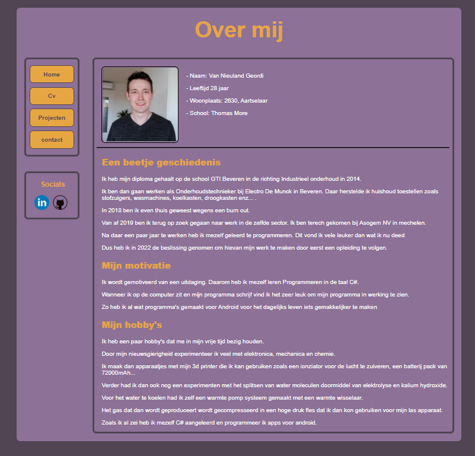

Versie 1
De eerste versie van mijn portfolio was zeer standaard.
Hier had ik C.R.A.P. nog niet op toegepast. En ik had hier nog geen contact en projecten pagina.

Versie 2
De 2de versie begon ik al te experimenteren met een kleurenpalet zodat je een contrast krijgt met de voorgrond
en de achtergrond.
Ook aan mijn titels begon ik wat meer aandacht aan te besteden.

Versie 3
Deze website is momenteel de huidige versie en ik heb alles toegepast wat we in de les hebben geleerd.
Ik heb een nieuw kleurenpalet gezocht en toegepast.
Ook wat meer omkadert met afrondingen om een scheiding te krijgen tussen mijn elementen.
